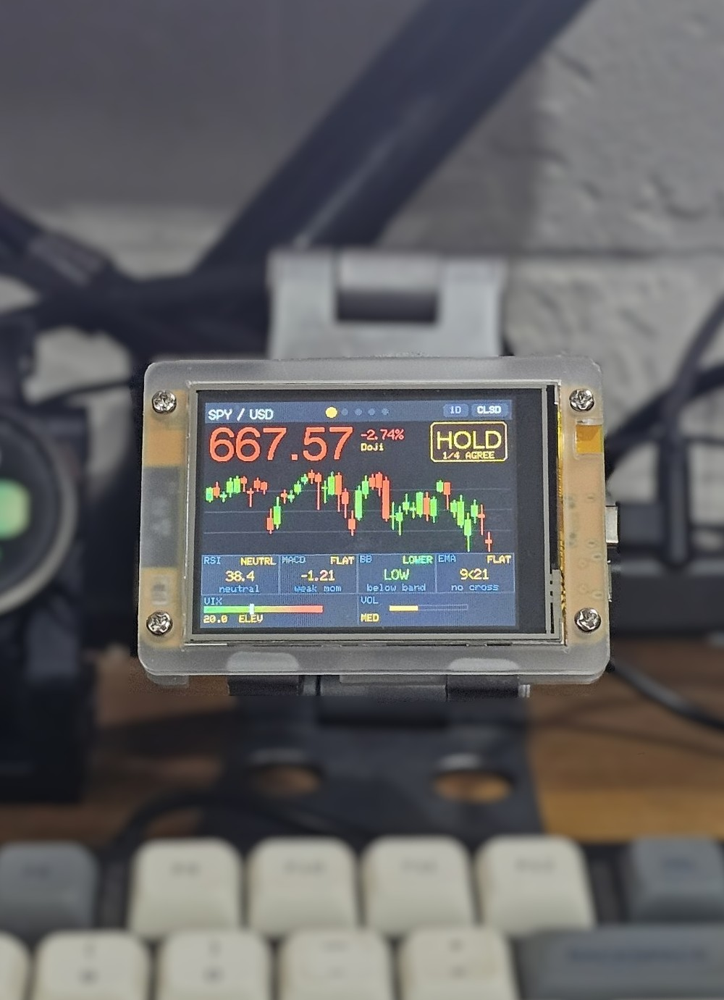
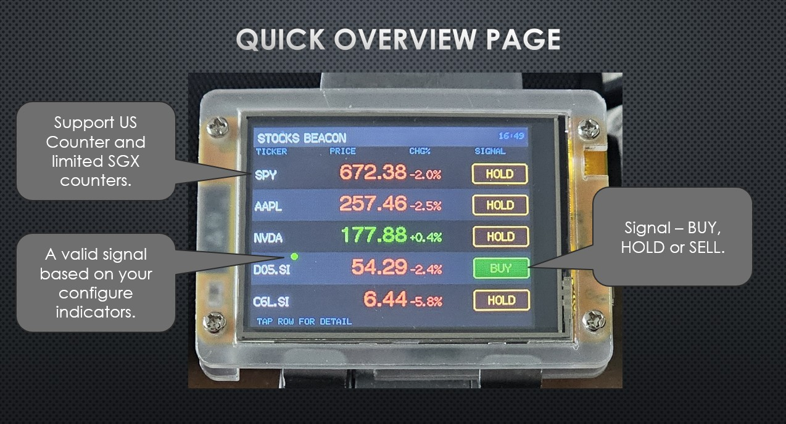
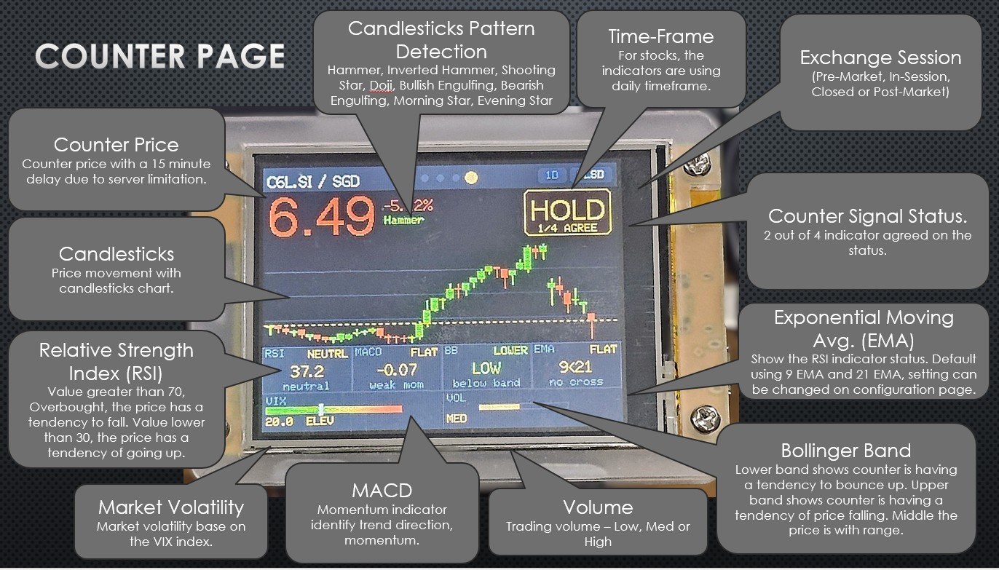
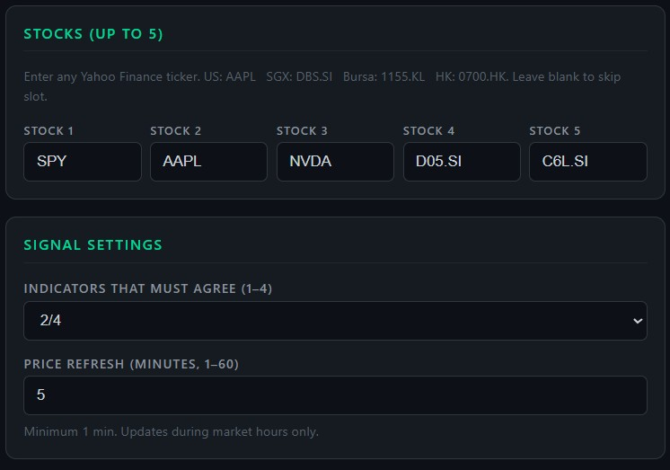
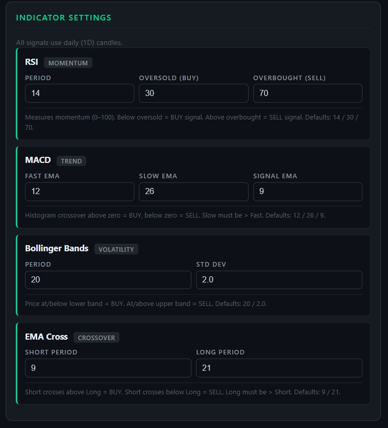

StockBeacon
Your always-on stock market companion. Track your watchlist with regularly updated prices, key technical indicators, and price change data — all on one dedicated display.
What is StockBeacon?
StockBeacon is a dedicated Wi-Fi connected display built for stock market watchers who want market awareness without constantly checking their phone or switching browser tabs. Select your watchlist, set it on your desk, and let it do the watching for you.
It cycles through your chosen stocks automatically, showing everything you need to make informed decisions at a glance — price, change, and the indicators that matter most. Price data is sourced from Yahoo Finance and is subject to their standard delay.
Screen Modes
Overview Screen
The overview screen shows all your selected stocks side-by-side — current price and 24-hour change for each. A quick glance tells you where your watchlist stands right now.
Per-Stock Detail View
Cycle through each stock to see its full detail screen. Every stock gets its own view with a price chart and key technical indicators displayed clearly.
Technical Indicators
Each per-stock detail view includes the following indicators:
- EMA — Exponential Moving Average to spot trend direction
- Bollinger Bands (BB) — Volatility bands showing price extremes relative to the mean
- MACD — Moving Average Convergence Divergence for momentum signals
- Volume — Trading volume to confirm price moves and trend strength
- RSI — Relative Strength Index to identify overbought or oversold conditions
Candlestick Pattern Detection
StockBeacon automatically detects key candlestick patterns on the price chart, giving you instant visual signals without having to interpret the candles yourself. The following patterns are supported:
- Hammer — Bullish reversal signal appearing at the bottom of a downtrend
- Inverted Hammer — Potential bullish reversal at the end of a downtrend
- Shooting Star — Bearish reversal signal appearing at the top of an uptrend
- Doji — Indecision candle indicating a potential trend change
- Bullish Engulfing — Strong bullish reversal where a large green candle engulfs the prior red candle
- Bearish Engulfing — Strong bearish reversal where a large red candle engulfs the prior green candle
- Morning Star — Three-candle bullish reversal pattern signalling the end of a downtrend
- Evening Star — Three-candle bearish reversal pattern signalling the end of an uptrend
All Features
- Track multiple user-selected stocks simultaneously
- Overview screen showing all stocks at once
- Automatic cycling through per-stock detail views
- Price chart per stock
- EMA, Bollinger Bands, MACD, Volume, and RSI indicators
- Candlestick pattern detection — 8 patterns including Hammer, Doji, Engulfing, and Star patterns
- Price data via Wi-Fi powered by Yahoo Finance — no phone or computer required
- Browser-based configuration — select stocks, set cycling speed
- Runs fully standalone once configured
- Plug-and-play setup — no technical knowledge required
Specifications
| Display | 2.8" TFT Color · 240 × 320 px |
| Connectivity | Wi-Fi 2.4 GHz |
| Power | USB-C (5 V) |
| Data source | Yahoo Finance (delayed) |
| Screen modes | Overview + Per-Stock Detail |
| Indicators | EMA, BB, MACD, Volume, RSI |
| Pattern detection | 8 candlestick patterns |
| Dimensions | 85 × 60 × 15 mm |
| Weight | 66 g |
What does it display?

On Your Desk
Overview
Stock DetailEasy Browser-Based Setup

Stock Selection
Indicator SettingsFirmware Downloads
Download and flash the latest firmware to keep your StockBeacon up to date.
Frequently Asked Questions
Can't find what you're looking for? Contact us.